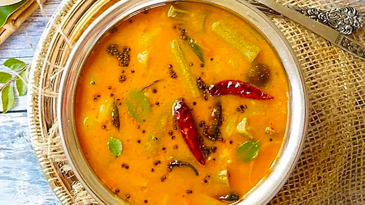
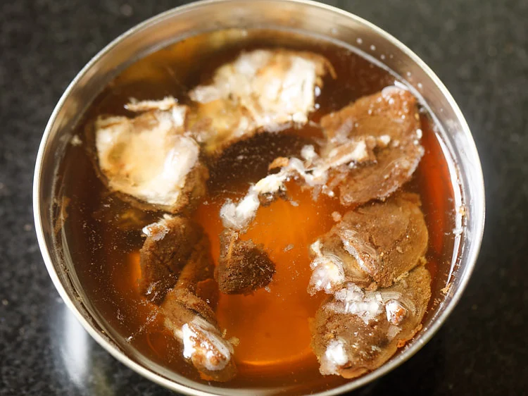
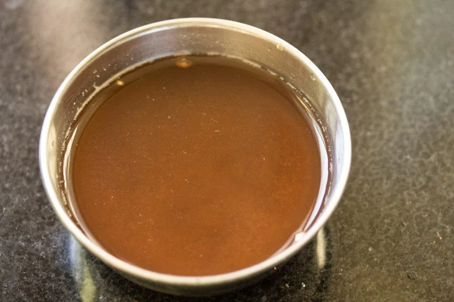

Sambar Recipe

South Indian cuisine is known for its vibrant flavors and unique dishes. One such iconic dish that perfectly represents the essence of South Indian food is sambar. Sambar is a delicious and wholesome lentil-based stew that is packed with a variety of vegetables and aromatic spices.
Ingredients
You will get all the ingredients to make sambar in any Indian grocery store. Some things like lentils, tamarind paste, etc are available online too.
- Tuvar Dal - Traditionally, tuvar dal (arhar dal, toor dal, yellow pigeon pea lentils) is used for making this delicious and traditional Indian dish. You can replace it with moong dal (split and skinned petite yellow lentils) or masoor dal for a lighter version. A mix of any of these dals also works great.
- Vegetables - This dish is loaded with the goodness of vegetables. I like to use pearl onions (shallots), drumstick, carrot, eggplant, and yellow pumpkin, but you can go ahead and add any vegetables of your choice
- Tamarind Paste - Tamarind add a delicious hint of tanginess to the recipe. If you are out of tamarind, you can substitute it with lemon juice.
- Sambar Powder - Sambar powder is a spice mix made using whole spices, lentils, and a few other ingredients and is a must to make homemade sambar. You can make it at home using my easy sambar powder recipe or buy it out.
- Oil - While I prefer making sambar in vegetable oil, you can also make it in ghee. In Tamil Nadu, it is made in gingelly oil (sesame oil) while in Kerala it is made using coconut oil.
- Other Ingredients - Other than the above ingredients, you will need turmeric powder, salt, curry leaves, whole dry red chilies, mustard seeds, onions, and tomatoes.
How to make Sambar Recipe
This recipe includes a series of preparations, that are all assembled later together. So you need to make the tamarind pulp, cook vegetables and lentils. Lets begin.
Making tamarind pulp
- Soak the tamarind in hot water for 20 to 30 minutes.

- Once the tamarind gets soft, then squeeze the tamarind in the water itself. Discard the strained tamarind and keep the tamarind pulp aside.

Cooking lentils
- Rinse tuvar dal a couple of times in water.
- Drain all the water and add the dal in a 2 litre pressure cooker. Also add ¼ teaspoon turmeric powder.
- Add 1.5 to 1.75 cups water and mix. Cover and pressure cook dal for 7 to 8 whistles or 9 to 10 minutes on medium heat.
- When the pressure settles down on its own, open the lid and check the dal. The dal should be completely cooked and mushy.
- Mash the dal with a spoon or wired whisk. Cover and keep aside. You can see the consistency of dal in the pic below
Cooking vegetables
- When the dal is pressure cooking - rinse, peel and chop the vegetables.
- Take the chopped vegetables in a pan or pot. Also add 6 to 7 pearl onions or 1 small to medium onion (thickly sliced) and 1 small to medium tomato (quartered).
- Sprinkle turmeric powder, kashmiri red chilli powder and salt as per taste. Adding kashmiri red chili powder is optional and can be skipped.
- Add 1.5 to 2 cups water and stir.
- Keep the pan on a stove top and begin to cook vegetables on a medium-low to medium flame. In between do check when the vegetables are cooking.
- Cook till the vegetables are almost done. Ensure that you don't over cook the vegetables.
Making sambar
- Once the vegetables are almost cooked, then add the tamarind pulp and 1 to 1.5 tablespoons sambar powder. Mix well.
- Add the mashed dal. Mix again very well.
- Simmer on a medium-low heat till the sambar comes to a boil.
- You will see a frothy layer on top when the sambar begins boiling. At this step switch off the heat. Cover and set aside.
Tempering
- In a small pan or tadka pan, heat 2 tablespoons gingelly oil. Add ½ tsp mustard seeds.
- Let the mustard seeds crackle.
- Then add 1 to 2 dry red chillies (halved and seeds removed).
- Immediately add 10 to 12 curry leaves, 5 to 6 fenugreek seeds (methi seeds) and 2 pinches of asafoetida (hing). Be careful as the oil splutters while adding curry leaves.
- Fry them till the red chilies change color and curry leaves become crisp.
- Immediately add this tempering mixture in the hot sambar.
- Cover the pan with its lid for 4 to 5 minutes, so that the aroma and flavors from the tempering mixture gets infused with the sambar.
- Serve sambar hot. You can garnish it with a few coriander leaves if you prefer. It can also be served with steamed rice, idli, dosa, medu vada or uttapam.
Serving Suggestions
Sambar is served with steamed rice, idli, dosa or medu vadai or uttapam. You can vary the consistency of sambhar and serve it with whatever dish you are making like idli or dosa or rice.
A slightly thin sambhar is served with idli, dosa and medu vada. Medium to thick consistency sambar is served with steamed rice.
Notes
- Sambar Powder: The sambar powder can make or break your sambar. Use the best sambar powder. It can be homemade or from your favorite brand. Sambar powder is easily available online.
- Vegetables: The mix of various vegetables add plenty of their unique flavor and taste to sambar. Thus depending on the type of vegetables used, your sambar recipe will taste different every time. I prefer to add a mix of drumsticks, brinjals, pumpkin or ash gourd, pearl onions (shallots), carrots and okra. Feel free to mix and match the veggies from the list mentioned in the post.
- Lentils: Try to use fresh and preferably unpolished tuvar dal for best flavor and health reasons. The fresher the dal is the better it tastes and cooks faster. For faster cooking, you can opt to soak the lentils in water for 30 to 60 minutes.
- Cooking Lentils: The lentils can be cooked in an Instant Pot or pan on the stove top. Add water as needed. The lentils should be softened and mushy.
- Tamarind: I suggest to use fresh tamarind. If you use aged tamarind, then it will be darker in color and more sour. So add a bit less of the dark tamarind than what is mentioned in this recipe.
- Cooking Vegetables: Always cook the vegetables till they are done but whole. They should not break or become a mush in the sambar. So when cooking, add vegetables which cook slower first and cook them for some minutes. Then add vegetables which cook faster. Note that The vegetables can also be steamed in a steamer or pressure cooker or Instant pot.
- Oils: Both gingelly oil (raw sesame oil) and edible coconut oil give a really good taste in sambar. If you do not have these oils, then you can use sunflower oil or peanut oil or even ghee
- Frying spices: While doing the tempering or tadka, always fry on a low heat and stir regularly. The spices and herbs cook fast, so you have to be attentive. If they get burned, then discard them and make a new tempering. Never add a burnt tempering in sambar as it will ruin the taste.
- Consistency: Change the consistency of your sambar by adding less or more water. However, do not add too much water and make it thin as then the flavors get diluted. For serving with rice you can make a thick sambhar and for serving with idli or dosa, you can make a medium consistency sambar.
- Balancing sourness: In case if you find the taste of sambar more sour, then you can always balance the sour taste by adding a bit of jaggery.
- Variations: A few crushed garlic cloves can also be added to the tempering. This imparts a different flavor in sambar. A bit of jaggery can also be added to give a slight sweeter taste.
Home